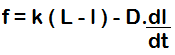
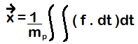
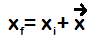

Step 1:
- Define the 3 masses, 2 springs and their positions for the spring-mass system.
- Define the spring constant.
- Define the damping constant.
- Initialize the masses.
Step 2:
-The force acting on each mass is:

L = Minimum energy spring lenght
l = Current length of the spring
k = Spring constant
D = Damping constant
- The position is given by:

x = position of point p
m = mass of point p

Step 3:
- Project this new position every time and update the position.
- Repeat step2 till the worm moves out of the scene.
Note:
The impact of friction pertaining to the nature of surface has not been considered.